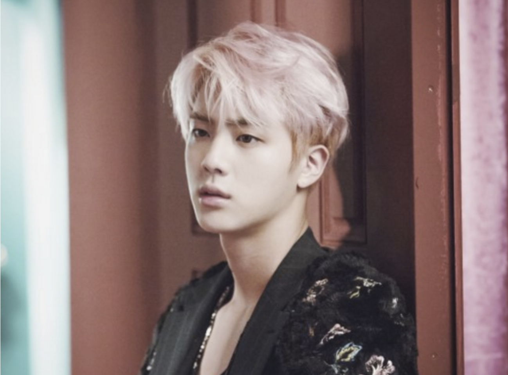
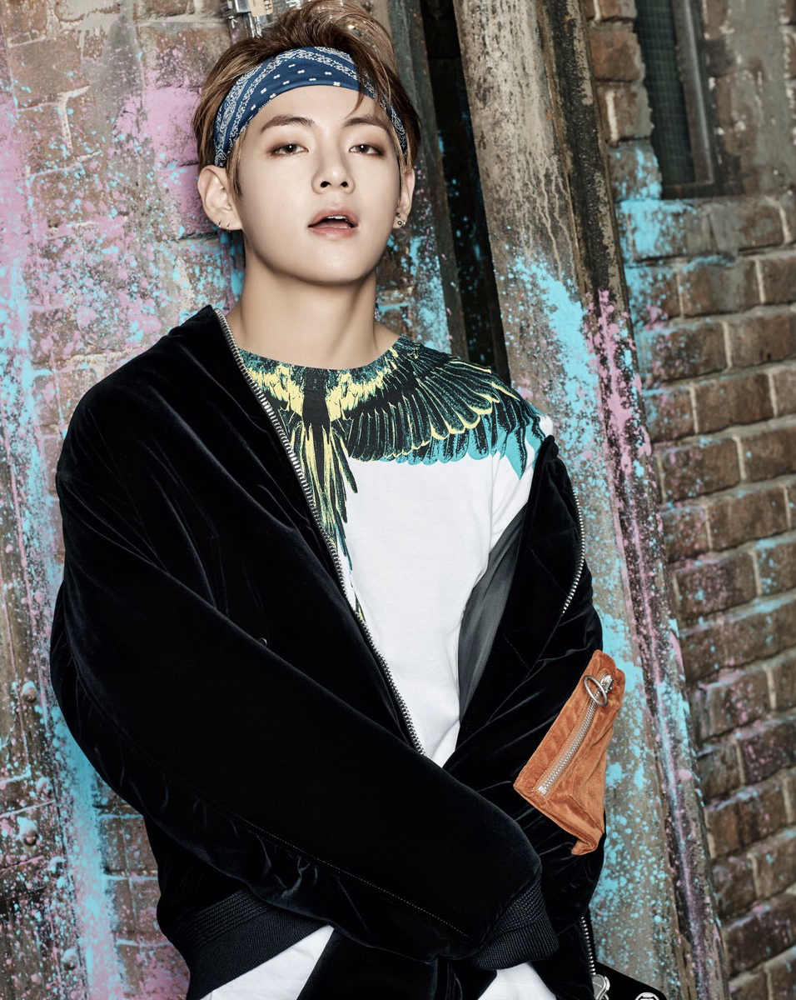

BTS also known as the Bangtan Boys, is a South Korean boy band formed in 2010 and debuting in 2013 under Big Hit Entertainment. The septet—consisting of members Jin, Suga, J-Hope, RM, Jimin, V, and Jungkook—co-writes and co-produces much of their own material. Originally a hip hop group, their musical style has evolved to incorporate a wide range of genres; their lyrics have often discussed mental health, the troubles of school-age youth and coming of age, loss, the journey towards self-love, and individualism. Their work also frequently references literature, philosophy and psychological concepts, and includes an alternate universe storyline.
Read more about them here: kprofiles or else at wikipedia
Visit their Official Website here
The Group Memebers of this group and a quick facts:
- Kim Seokjin
Stage Name: Jin
Position: Vocalist, Visual
Birthday: December 4, 1992
Zodiac sign: Sagittarius
Birthplace: Gyeonggi-do Gwacheon

- Kim Namjoon
Stage Name: Rap Monster or RM
Position: Main Rapper, Leader
Birthday: September 12, 1994
Zodiac Sign: Virgo
Birthplace: Ilsan, Gyeonggi-d
- Min Yoongi
Stage Name: Suga
Position: Lead Rapper
Birthday: March 9, 1993
Zodiac sign: Pisces
Birthplace: Buk-gu, Daegu
- Jung Hoseok
Stage Name J-Hope
Position: Lead Rapper, Main Dancer
Birthday:February 18, 1994
Zodiac sign: Aquarius
Birthplace: Gwangju
- Park Jimin
Stage Name: Jimin
Position: Lead Vocalist, Main Dancer
Birthday: October 13, 1995
Zodiac sign: Libra
Birrthplace: Busan
- Kim Taehyung
Stage Name: V
Position: Vocalist
Birthday: December 30, 1995
Zodiac sign: Capricorn
Birthplace: Daegu
- Jeon Jungkook
Stage Name: Jungkook
Position: Main Vocalist, Lead Dancer, Sub Rapper, Center/ Face of the Group, Maknae
Birthday: September 1, 1997
Zodiac sign: Virgo
Birthplace: Busan